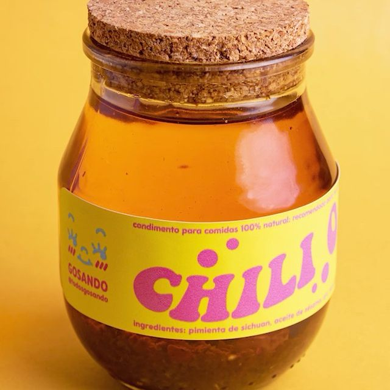

¿Quienes Somos?
Somos Andrés y Sofía. Andrés, es un entusiasta de la luz, simetría y nitidez. Busca armar en cada foto una escena equilibrada y pulcra, siempre pendiente de mejorar nuestro equipo y ganar experiencia. Sofía, se ha ido formando como fotógrafa desde los 13 años. Apasionada de la gastronomía, le encanta jugar con la fotografía analógica y su foco principal es crear piezas estéticas llenas de color.

